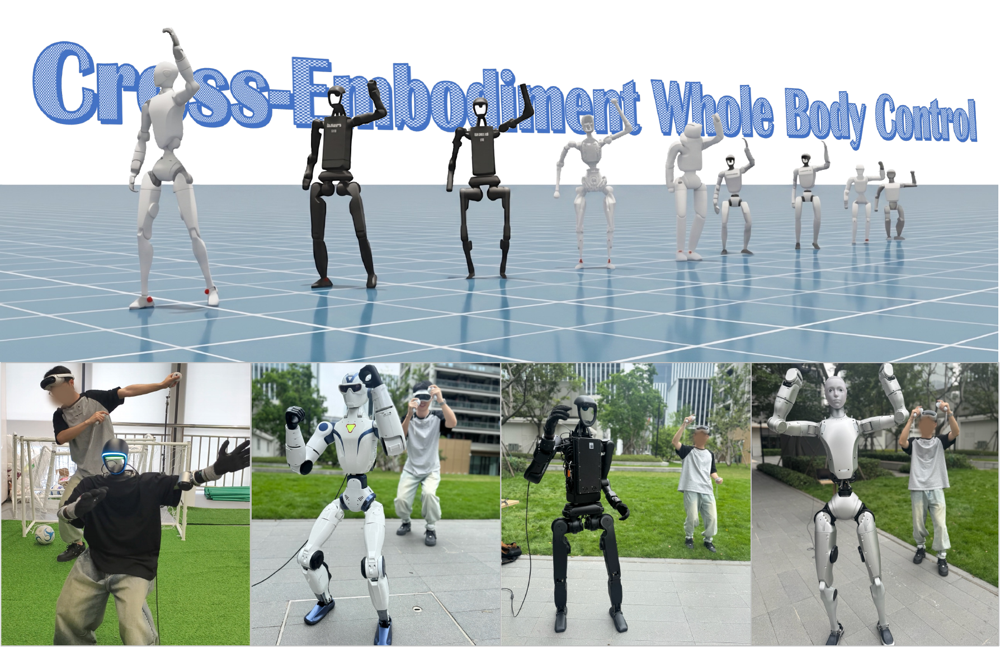
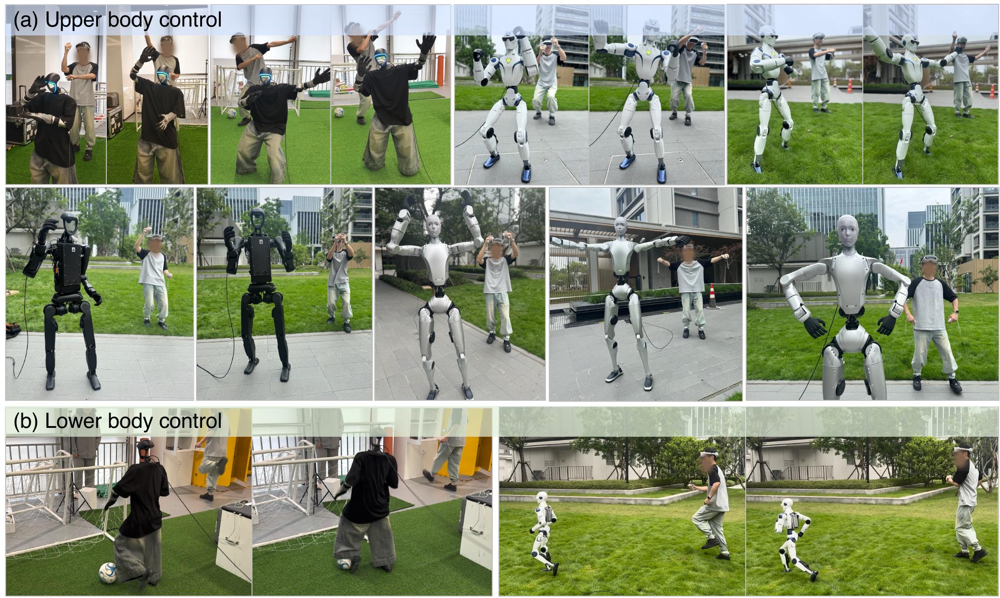

Human-centered commands
Full human motion, retargeted robot motion, and sparse five-point VR observations are aligned in one command-token space.
CoRL 2026 · Austin, Texas
From isolated per-robot policies to a shared motion foundation model trained across diverse humanoid bodies.
1Tongji University · 2Fudan University · 3Shanghai Innovation Institute
Real-world deployment One interface, diverse bodies
The idea
Human motion carries structure that can be shared across bodies. Physical execution cannot.
X-WBC separates reusable temporal motion semantics from embodiment-specific proprioception and action. Multiple humanoids roll out together, contribute to the same PPO updates, and optimize one shared motion Transformer.

How it works
Three command routes describe the same underlying motion intent. A shared temporal backbone learns across robots; lightweight robot-specific modules make that intent executable.

Full human motion, retargeted robot motion, and sparse five-point VR observations are aligned in one command-token space.
A causal Transformer integrates command and proprioception histories, sharing motion experience across all active robots.
Robot-specific state encoders and action decoders respect different morphologies, joint layouts, dynamics, and action spaces.
Evidence
Training-motion studies examine architecture and joint training. A separate frozen evaluation tests external locomotion styles without replacing the original analysis.
Table 1 · BONES-SEED training motions
98.60% / 93.22%
The shared Transformer achieves the strongest success rate on both evaluated embodiments. This is an in-distribution study of architecture and joint training—not an unseen-embodiment claim.
Command consistencyRobot, human, and sparse-VR routes remain closely matched.
Component evidenceRemoving command routes, alignment, or robot-specific modules degrades both robots.
100STYLE · 800 frozen clips · G1
91.13%
X-WBC completes 729 clips through its sparse five-point VR interface. The comparison uses common scoring while each external system retains its native command interface and low-level controller.
Success rate on the complete 100STYLE evaluation grid. Interfaces differ by system; see the paper for protocol and metric interpretation.
Real robots
The same sparse-VR command format controls Unitree G1, R1, H1-2, and H2, while robot-specific branches map shared motion features to each platform.

Abstract
Scaling humanoid whole-body control requires large motion corpora and experience shared across robot bodies. X-WBC introduces a cross-embodiment framework in which a shared motion Transformer learns reusable temporal structure, while lightweight robot-specific modules condition execution on each robot’s proprioception and action space. The framework aligns full human motion, robot reference motion, and sparse VR observations into human-centered command tokens and learns from mixed multi-robot rollouts. Simulation studies, external locomotion evaluation, token-space analysis, and deployment on four real humanoids support the feasibility of sharing a whole-body control backbone across bodies with different sizes and kinematics.
Citation
Please cite our paper if you find this work useful.
@inproceedings{zhang2026xwbc,
title = {X-WBC: A Cross-Embodiment Foundation Model
for Humanoid Whole-Body Control},
author = {Zhang, Juntong and Gu, Chun and Zhang, Li},
booktitle = {Conference on Robot Learning},
year = {2026}
}